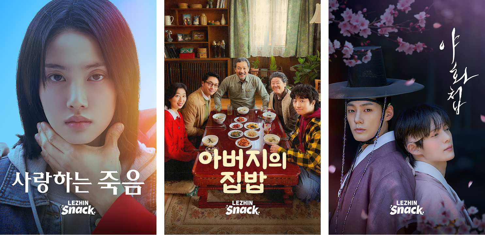

(자료 제공: 레진스낵)
“글로벌 웹툰 플랫폼 노하우와 풍부한 메가 IP를 보유한 <레진스낵>은 스타 감독들과의 협업 및 장르 다변화 전략을 통해 차별화된 ‘웰메이드 숏드라마’ 생태계를 이끌어가고 있다.”
Q. 숏드라마 플랫폼 ‘레진스낵’을 론칭하게 된 계기와 배경은 무엇인가?
(이) 키다리이엔티로 시작하여, 키다리스튜디오가 되었고, 이후 레진엔터테인먼트도 인수했다. 키다리에서 ‘키’가 키움증권의 ‘키’이고 ‘다’가 다우기술이다. 키다리스튜디오와 레진엔터테인먼트는 봄툰, 레진코믹스라는 웹툰 플랫폼 사업을 하고 있다. 원래는 한겨레의 ‘씨네21아이’를 인수하면서 한국 영화의 메인 투자 배급 업무로 영상을 처음 시작했다.
처음 레진스낵을 론칭하게 된 것은 콘텐츠 소비 행동이 모바일로 빠르게 이동하고 있다는 자체 판단이 있었기 때문이었다. 웹툰 플랫폼 이용자들이 이미 모바일로 많이 보고 있는 상황이었고, 쇼츠도 단순 클립에서 서사가 있는 숏드라마로 이동하는 모습이 보였다. 그리고 글로벌 대상으로 한 웹툰 플랫폼을 여러 개 가지고 있고, 해외 제작사를 대상으로 한 IP 세일즈를 하고 있어 글로벌 시장에서 쇼츠가 성장하고 있다는 것을 이미 알고 있었다. 그래서 저희도 숏드라마를 해야겠다고 생각했고 영상 두 편을 제작하는 것으로 시작했다. 회사 자체가 IP를 굉장히 중요시하고 있는데 이 IP를 어디까지 확장을 할 수 있을까 생각할 때 숏드라마가 그중 하나라고 봤다. 단순한 플랫폼 운영자가 아니라 이 IP를 가지고 어떤 방식으로 어떻게 보여줄 수 있을까를 많이 생각하면서 <레진스낵>을 론칭했다.
두 번째는 모회사 다우기술 데이터가 IT가 강한 회사라 플랫폼 운영이 용이했다. 거기다 현재 글로벌에서 웹툰 플랫폼을 13개 정도 운영을 하고 있기 때문에 플랫폼에 대한 노하우가 상당히 축적되었다고 보았다. 세 번째는 자체적으로 보유하고 있는 IP가 무궁무진하다는 점이다. 그리고 마지막으로는 영화나 드라마에서 10~20년씩 일을 해오신 분들의 노하우를 보유하고 있다. 제작부터 유통 인력까지 있기 때문에 숏드라마를 A부터 Z까지 다 할 수 있는 상황이었다.
Q. 레진스낵이 최근 공개한 라인업이나 혹은 최근 가장 공을 들이고 있는 대표적인 프로젝트가 있다면 소개 부탁드린다.
(이) 사실 올해 2월에 오픈했으니까 이제 4개월밖에 안 된 상황이다. 그럼에도 불구하고 많은 대표작들이 있다. 우선은 2월에 오픈작을 진행할 때 이병헌 감독님의 <애 아빠는 남사친>이라는 작품이 많이 알려졌다. 5월에는 메가 IP 작품 BL 사극 <야화첩>을 선보였는데, 이 작품을 통해서 글로벌 팬들이 굉장히 많이 유입됐다. 그리고 9월에는 이준익 감독님, 이후 하반기에는 이원석 감독님 작품이 나오는데 이번 ‘부천국제판타스틱영화제’에서 이 두 작품이 상영됐다. GV 행사와 레드카펫을 진행하는데 7월과 9월에는 영화적인 숏드라마를 오픈하면서 사람들에게 ‘웰메이드’라는 인식을 심어주기 위해 노력하고 있다.
그 외에도 레진코믹스, 봄툰에서 유명한 메가 IP 작품을 영상화하고 있는데 <광안>이라고 일본과 미국에서 흥행한 로맨스 사극 장르의 웹툰인데 ‘츄’라는 배우가 나온다. <국세청 망나니>라는 키다리스튜디오 웹소설 원작의 현대판 판타지에는 ‘이준’ 배우가 출연한다. 마지막으로 유튜브 영상툰 ‘MZ골퍼 금귤이’를 원작으로 한 <금귤이>라는 골프 숏드라마를 준비하고 있다.
Q. 굉장히 다양한 소재로 기획을 하고 있는 것 같다.
(이) 이건 저희의 전략과도 이어지는 이야기인데, 중국형 숏드라마가 재미는 있지만 치정이나 막장, 로맨스 위주로 수위가 센 경우가 많다. 저희는 IP 확장을 해보는 게 최우선의 목적이었기 때문에 보유하고 있는 웹툰 IP를 가지고 여러 장르에 도전을 해보고 싶었다. 그래야 다양한 사람들이 유입되어 숏드라마 플랫폼이 확장이 될 수 있다고 생각했다. 그리고 일반 오리지널 숏드라마 같은 경우에는 사실 비슷하게 나올 수밖에 없는 대본들이 많은데, 레진의 IP들은 고유 콘셉트와 취향을 가지고 있어 그걸 토대로 영상화 작업을 했다. 그러다 보니까 스릴러, 드라마, 힐링물 등 장르가 다양하다.
“숏드라마는 IP 밸류체인의 연장선에 있다고 생각한다. 자체 IP와 외부 창작자, 투자 생태계를 연결해 차별화된 제작 모델을 만들어가려고 노력하고 있다.”
Q. 키다리스튜디오&레진엔터테인먼트의 이번 ‘숏폼 드라마’ 시장으로의 전환이나 확장은 비즈니스적으로 또 다른 도전이었을 것 같다. 레진이 시장에 본격적으로 드라이브를 걸게 된 핵심 계기나 전략적 이유가 무엇인지 궁금하다.
(이) 아무래도 IP 확장을 좀 많이 생각했던 것 같다. 어쨌든 지금 한국 영화와 드라마 시장이 점점 침체되고 있는 건 사실이다. 웹툰 시장도 파이가 한정되어 있는 상황에서 글로벌 시장에서 어떻게 하면 좋을까라는 고민이 많다.
그리고 긴 영상보다는 쇼츠에 더 익숙한 모바일 세대가 많이 늘어나기도 했다. 그래서 글로벌 OTT인 넷플릭스와 아마존은 ‘클립스(Clips)’, 디즈니플러스는 ‘버츠(Verts)’라는 숏폼 피드 서비스를 도입해서 롱폼으로 유입하여 영상을 보게 만들고 있는 상황인데, 이건 시대적 흐름이라고 생각한다. 그리고 레진의 웹툰 플랫폼이 전 세계적으로 젊은 여성을 타깃으로 하는 경우가 많다 보니까 숏드라마 플랫폼 타깃층과 굉장히 유사하다고 생각했다. 무엇보다 웹툰 플랫폼도 계속 유료 결제를 할 수 있도록 후킹하는 것이 있어야 하는데, 숏드라마도 마찬가지다.
사실 플랫폼 역량이나 운영 측면에서 봤을 때 플랫폼을 만드는 것은 그렇게 큰 일은 아니었다. 오히려 숏드라마를 한다는 것 자체를 IP 확장을 위해 우리가 무엇을 할 수 있을까 하는 ‘IP 밸류체인’ 차원에서 생각했다. 그래서 숏드라마를 기반으로 미드폼, 롱폼 시리즈도 제작하고 공연화해 보는 것에서도 고민하고 있다. 말하자면 IP 확장 측면에서 고민하고 있고, 숏드라마는 그 연장선에 있는 신규 성장 사업이라고 생각한다.
Q. 레진스낵의 현재 콘텐츠 수급 구조는 어떻게 되는가? 제작부터 유통까지 인하우스 시스템을 갖추고 있는데 자사 IP와 자체제작만으로 이루어지는지, 혹은 외부와 협력하는 방식이 있는지 궁금하다.
(이) 레진스낵에 들어가 있는 작품이 총 100개라고 치면 거의 45개, 그러니까 45%가 자체 제작이고, 나머지 한 55%가 외부 오리지널 소싱이다. 어느 정도의 제작 물량이 받쳐줘야 플랫폼 이용자들이 볼거리가 생기기 때문에 이러한 방식을 취하고 있다. 그리고 자체 제작 45개 중 거의 90~95%를 자체 IP로 제작한다. 그 외 오리지널 작품은 감독님들이 직접 창작한 경우나 타사에서 본인들 IP로 제작 요청을 하는 경우들이다. 그런 작품들이 점점 늘어나고 있는 상황이다.
Q. 스타 감독과의 제작도 많이 하고 계시는데 레진스낵에서는 어떤 시스템으로 숏드라마 제작을 하고 있는가?
(이) 현재 거의 100개 넘게 숏드라마를 제작하고 있는데, 저희만이 갖고 갈 수 있는 차별화 전략이 있어야 된다고 생각했다. 크게 세 가지로 말씀드릴 수 있을 것 같다.
첫 번째는 자체 IP를 가지고 영상화하는 것이다. 두 번째는 외부 펀딩을 통한 제작이다. 모두 모태 펀드를 활용했다. 그동안 영화 펀딩을 계속해 왔기 때문에 숏드라마도 펀딩해 올 수 있었다. 그래서 작품별로 투자자들이 있다. 회사 입장에서는 제작 물량을 더 많이 확보할 수 있고 안정적인 여건을 형성할 수 있다는 점에서 리스크를 헤지(Hedge)하는 데 유리하다. 그리고 모태 펀드로 하게 되면 대부분 제작사가 공동 제작으로 참여하여 수익을 나누어 가지는 구조라서 더 열심히 해 주셨다고 생각한다.
세 번째는 아무래도 내부에 영화를 오래 하셨던 분들이 많다 보니까 영화 제작 인력이 많이 투입되고, 저마다의 편집 개성이 반영되어 천편일률적인 숏드라마가 나오지 않은 것 같다. 무엇보다 옛날 같았으면 벌써 입봉을 하고도 남을 감독님들이 영화와 드라마 시장이 어려워지면서 입봉의 기회를 많이 놓쳤는데, 그 감독님들이 첫 상업의 문턱을 저희와 함께 하게 되는 경우가 많다. 영화 제작진들을 끌어올 때 그런 부분이 제작사들과 니즈가 맞았다. 왜냐하면 제작사에서는 키워야 하는 신인 감독과 작가가 있는데 이들의 상업성을 숏드라마로 테스트해 볼 수 있었기 때문이다.
“레진코믹스의 글로벌 팬덤은 레진스낵의 중요한 자산이다. 그러나 플랫폼의 지속가능성을 결정하는 것은 결국 콘텐츠 자체가 수익을 창출할 수 있는 구조를 만드는 것이다.”
Q. 레진스낵의 비즈니스 모델/수익 전략은 무엇인가?
(이) 사실 영상 자체로 돈을 버는 게 가장 행복한 일이다. 하지만 지금 숏드라마 플랫폼을 운영하고 유지하는 데 있어서 마케팅 비용이 매우 많이 든다. 그래서 어쩔 수 없이 제작 물량 확보를 위해서 저비용, 저예산으로 다량의 작품을 제작하거나 AI를 활용해서 예산을 낮추어 그 비용을 마케팅비에 투입해서 계속 작동하는 시스템을 진행하고 있다. 이런 방식이 대세이지만 일단 콘텐츠가 재밌어야 사람들이 볼 것이라고 생각한다. 그래서 영상 자체로 수익을 내는 구조를 많이 고민하고 있다. 그런 차원에서 유명한 감독님들과 많이 작업을 했던 것 같다.
영화제 상영이나 극장 기획전 등과 같은 방식도 이야기 중이다. 어떻게 보면 저희 작품은 드라마 100억 제작비 시대에 1~2억 원으로 제작하는 애니메이션 PV(Promotion Video) 같은 성격을 가졌다고 할 수 있다. 그래서 이런 아이템이 글로벌에서 성과가 나더라도 작은 성과일 수밖에 없어서 향후 미드폼이나 롱폼 시리즈물로 확장하는 것을 논의 중이다. 그리고 자체 제작 작품을 레진스낵 독점이 아니라 몇 개월 홀드백을 가진 다음 전 세계에 공개해서 해외 수익을 기대하고 있기도 하다. 왜냐하면 저희가 IP를 선정할 때 해외에서 인기 있는 글로벌 지표를 보고 선택하는데 그 IP의 인지도로 인해 유입되는 분들도 꽤 많았다. 가령 <야화첩>도 멕시코 같은 중남미 지역에서 트래픽이 갑자기 올라오기도 하는 등 글로벌 팬덤이 확인되고 있다.
Q. 플랫폼의 과금 구조는 어떤가? 대부분 웹소설과 유사한 구조를 가지고 가던데 레진스낵은 어떤 전략을 가지고 가는가?
(이) 일반적인 숏드라마 플랫폼과 마찬가지로 구독제를 갖추고 있고 광고를 보면 숏드라마를 볼 수 있는 광고 기능도 도입했다. 여기서 조금 독특한 게 기존 플랫폼인 레진코믹스에서 쓰는 코인으로 레진스낵을 이용할 수 있다. 전 세계에 있는 고객들이 레진스낵으로 유입될 수 있는 구조다. 즉, 전 세계 레진코믹스와 레진스낵 이용자가 자유롭게 이용할 수가 있는 것이다. 레진코믹스는 국내 최초 유료 플랫폼인데, 이 플랫폼 이용자들은 이미 구매를 해서 콘텐츠를 이용한다는 게 학습이 되어 있어서 레진스낵으로 유입되면 좋은 전략이라고 생각한다.
Q. 기존 레진 플랫폼의 견고한 소비자층의 특성이 제작 방향에도 영향을 미치기도 하는가?
(이) 레진스낵의 이용자를 국내와 해외로 구분해서 보면 국내 이용자들은 아무래도 대중적 성격이 큰 것 같다. 반면 해외 이용자들은 기존 IP를 타고 레진코믹스의 기존 팬덤이 많이 유입되고 있다. 현재 비중이 비슷한데 부천영화제나 유명한 감독님들 작품을 통해서 더 대중적인 장르로 확산해 보려고 한다.
“글로벌 인지도가 높은 IP를 발굴하여 감독의 성향과 매칭하는 일련의 과정을 거쳐 레진스낵만의 개성이 묻어난 다양한 장르의 숏드라마가 탄생한다.”
Q. 기존 흥행 IP를 숏폼 콘텐츠로 재가공할 때 가장 중요하게 고려하는 요소는 무엇인가?
(이) 첫 번째는 국내와 해외 웹툰 플랫폼에서 어느 정도 인지도가 있다거나 팬덤이 입증된 IP를 가지고 시작하는 것이다. 그래야 리스크가 감소된다고 생각했다. 두 번째는 기존 IP 중에 감독님들 본인이 자발적으로 참여할 수 있도록 열심히, 재밌게 만들고 싶은 콘텐츠를 선택해서 제작하도록 했다. 그래서 드라마나 스릴러와 같이 장르별로 포션을 나누었다.
레진코믹스의 초창기 작품 중에 독특한 게 많아서 초창기 작품을 많이 활용해 보자는 생각을 했다. 장르는 저희가 인위적으로 나누고 작업이 가능한 원작자를 고려하여 리스트업을 두세 배 해서 감독님들에게 개별적으로 보내서 감독님들이 원하고 성향이 맞으면 하나하나 매칭을 했다. 콘텐츠는 누가 하는가에 따라 굉장히 다른 작품들이 나오기 때문에 이런 매칭 과정이 중요하다고 생각했다. 대신 그래서 제작에 시간이 굉장히 오래 걸렸다.
Q. 원작자가 있는 IP를 가지고 자신만의 스타일을 가진 감독님들과 작업을 하는 과정이 쉽지는 않았을 것 같다. 가장 어려웠던 부분은 무엇인가?
(이) 원작자님들의 숏드라마에 대한 인식을 바꾸는 것에 공을 들였다. 왜냐하면 보통 원작자님들은 열심히 만든 자기 작품이 영화나 롱폼 드라마로 만들어지는 것을 원하신다. 현재 레진스낵에서 40여 편을 제작했고, 지금 작업하고 있는 것까지 포함하면 100편 정도 되는데 원작 작가님들을 설득하는 것이 가장 중요했다. 다행히 대부분의 원작자님들과 8~9년 동안 판권 거래를 같이 한 경험이 있어서 소통이 쉬웠고, 다른 플랫폼에 비해 작가님들이 열린 마음을 가지고 있었다. 영화나 드라마로 제작될 경우 운이 따르지 않으면 5~6년 묶여 있어서 지칠 때가 많은데, 숏드라마는 바로 제작이 가능하고 향후 롱폼이나 영화로도 갈 수 있도록 판권을 열어 두었기 때문에 원작자의 갈증이 조금 해소되어 설득이 가능했다고 본다.
숏드라마를 제작할 때 웹소설과 웹툰의 차이도 있다. 웹소설은 이미 지문, 관계 설정, 대사가 다 있어서 숏드라마 제작할 때 이것을 구조화시켜서 나누면 되는데 웹툰은 대부분이 그림으로 설명되기 때문에 각색을 굉장히 많이 해야 한다. 그런데 국내 원작자님들은 대부분 각색 방향에 자유도를 많이 주신다. 각색 방향을 제작사와 감독님과 상의해서 만들고 원작과 다른 점을 비교분석해서 원작자에게 확인을 받고 수정하는 과정을 거쳐 제작한다.
Q. 숏폼 드라마의 제작비는 보통 어느 정도인지요?
(이) 처음에는 1억 원 정도였다. 근데 판권이 올라가면서 지금은 1.5억 원에서 1.6억 원 정도라고 볼 수 있을 것 같다. 중국이 들어오면서 2억 원으로 뛰기는 했다. 저희는 펀딩 받는 구조까지 짜다 보니까 원작 판권료까지 포함해서 1.6억 원에서 2억 원 정도 드는 것 같다. 거기에 캐스팅이 좀 세거나 사극인 경우는 제작비가 더 높아진다.
늘 수익 구조를 따지면서 짜는데 막연히 제작비를 올린다고 해서 리쿱(recoup, 원가 회수)이 되는 상황은 아니어서 지금 1.6억 원에서 2억 원도 사실은 어려운 수준이긴 하다.
Q. 모든 작품을 모태펀드로 제작하는가?
(이) 모두 펀딩받고 있다. 제작비가 100이면 70%는 부분 투자 유치를 해오고, 30%는 저희 회사가 지불하는 자금 구조를 짜고 있다. 영화 펀딩을 보면 초창기에는 영화가 아니라 비목적 부분으로 투자를 한다거나 가치 펀드나 아이비(IB, Investment Banking) 펀드 같은 경우에는 드라마나 일반적인 용도로 사용할 수 있다. 그래도 VC가 신사업인 숏드라마 제작에 투자하기가 쉽지는 않았을 텐데 IP가 일단 있었고, 그 IP가 얼마나 성과가 있었는지를 보여드려서 가능했다. 그리고 무엇보다 제작사와 감독의 인지도가 투자유치에 도움이 됐다. 처음에는 저희가 먼저 시작했지만 지금은 많은 회사에서 숏드라마로 펀딩을 받는 것으로 알고 있다. 펀드로 투자를 받으면 정산이 굉장히 투명하다. 그런 점이 제작사 유입에도 기여를 했다고 본다.
Q. 제작 기간은 보통 어느 정도 소요되는가?
(이) 저희는 6개월에서 7개월 정도 걸린다. 왜냐하면 원작자님과 해결해야 하는 것도 있고, 특히 대본을 오래 보는 편이다. 촬영에 들어가면 대본을 수정할 시간이 없기 때문에 대본이 잘 나와야 한다. 그리고 편집도 오래 걸리는 편이다. 편집은 감독님의 의도를 우선하는 것을 원칙으로 하고 있다. 간혹 장편을 하셨던 분들이라 쇼츠의 성격과 다를 때도 있는데 수정하는 작업을 하다 보면 편집에 더 시간이 걸리기도 한다.
Q. 앞서 말한 한계들을 보완하기 위해 AI를 사용하는 경우도 많은 것 같다. 관련하여 레진스낵은 AI 기술을 얼마나, 어떤 방식으로 활용하고 있는가. 레진스낵이 숏폼 제작을 하는데 있어 AI 기술에 어떤 기대를 가지고 있는지 궁금하다.
(이) AI에 매우 긍정적이다. 모회사가 IT 회사고, 증권회사라서 그렇기도 하다. 레진에서도 곧 AI 챗봇 서비스가 시작된다. AI는 거스를 수 없기 때문에 잘 활용해야 한다고 생각한다. 영화감독님들과 작업을 하니까 AI에 대해 반감이 있지 않을까 걱정을 많이 하는데, 오히려 놀랍게도 감독님들이 다 AI 공부를 하고 계신다. 숏드라마에 AI를 활용해 보기도 하고 다양한 시도를 하고 계신다. 저희도 지금 두 작품 정도를 AI로 만들고 있다. 양산형은 아니다. 회사 차원에서는 물량 확보를 위해, 그 다음으로는 저비용이 관건이기 때문에 AI 작품을 늘리는 추세다.
특히 웹소설을 가지고 AI를 활용하면 시너지가 폭발한다. 왜냐하면 한국 웹소설 같은 경우 스토리가 좋고 거기에 너무 발전한 AI 기술을 접목하면 한국은 한국 배우가 나오는 버전이 될 수도 있고, 일본은 일본 배우가 나오는 버전이 가능해서 번역 정도가 아니라 완전히 로컬라이징이 될 수도 있다고 본다. 그리고 AI 기술을 굉장히 많이 활용할 수 있는데, 그림은 물론 작가 특유의 색채가 있지만 배경이나 그 외 다양한 것들에 이용할 수 있다. 저희가 제작하고 있는 숏드라마의 경우에는 오컬트물(Occult genre)이랑 판타지물(fantasy genre)이라 일반 숏드라마 예산으로 할 수 없기 때문에 AI로 만들어 보고 있다.
Q. 한국 숏폼 오리지널의 강점 요소가 무엇이라고 보는가?
(이) K-숏드라마만이 보여줄 수 있는 게 있다고 생각한다. 일단 한국 제작진이 정말 잘 찍는다. 같은 예산으로 훨씬 재미있는 이야기를 만들어내는 스토리텔링 재주꾼들이 다른 나라보다 더 많은 건 사실인 것 같다. 숏드라마를 제작한 경험이 있는 플랫폼사나 제작사들에서는 레진스낵이 영화감독과 작업하는 게 리스크가 있을 것이라고 걱정했는데 한국 제작진들은 적응이 굉장히 빨라서 해볼 수 있다고 생각했다.
그리고 감독님들 자체도 새로운 포맷에 대한 갈증도 있어서 연락이 먼저 오기도 한다. 지금도 플랫폼이 진입하기에는 마케팅 비용이 굉장히 차이가 나서 해외 사업자와는 골리앗과 다윗의 싸움이 될 것이다. 그래도 한국 작품들이 굉장히 뛰어나다고 지금 입소문이 나기 시작한 상황이라 숏드라마 시장이 아마 점차 커지지 않을까 싶다.
Q. 글로벌 시장 중에 레진스낵이 특별히 관심을 두고 있는 곳은 어디인가?
(이) 아무래도 가장 큰 시장은 북미다. 북미가 일단은 매출이 있고 숏드라마의 원작이 되는 K-웹툰에 대한 관심이 매우 높다. 그 외 국가는 아무래도 레진코믹스에 BL 웹툰도 많이 있다 보니까 대만이나 동남아시아 쪽을 염두하고 있다. 태국은 워낙 BL 장르 수요가 많아서 숏드라마 외에도 롱폼 드라마도 하고 있는데 잘 되고 있다. 태국에서는 BL 웹툰을 영상화한다거나 GL에 대한 수요도 많다. 이 분야는 팬덤이 아무래도 강하기 때문에 중점을 두고 있다. 브라질과 멕시코 같은 중남미도 한국 아이돌이나 한국 배우에 대한 관심도가 높아서 그쪽 시장도 주목하는 중이다.
일본은 지금 후지 TV를 비롯해서 민영 5대 방송사들이 숏드라마 플랫폼을 만들고 숏드라마팀이 내부에 있는데, 저희도 그쪽 팀과 한번 작업한 경험이 있다. 일본도 숏드라마를 굉장히 많이 제작하고 있다. 아무래도 좋은 IP도 많고 상상력이 좋다 보니까 CF 만든 경험을 가지고 짧은 후킹을 잘 만든다. 하지만 일본도 자생하는 플랫폼이 크게 성장하고 있지는 못하다. 두 개 정도(범프, 팝콘)를 제외하고는 대부분 중국 플랫폼이 다 차지하고 있다. 그런데 일본 이용자들은 비용을 지불하고 콘텐츠를 소비하는데 워낙 익숙해서 매출이 훨씬 잘 나오기는 한다. 일본은 문화적 특성상 새로운 포맷에 대해 수용하는 데 속도가 조금 걸린다. 하지만 지속적으로 상승하기 때문에 계속 성장세를 유지할 것이라고 본다. 한국보다 느릴 수 있겠지만 결국 파이는 더 커질 것으로 보인다.
“숏드라마는 신인 창작자에게 상업 프로젝트의 기회를 제공하고, 롱폼 제작 전 시장성을 검증할 수 있는 테스트베드 역할을 할 수 있다. 산업 초기 단계인 만큼 창작 환경에 맞는 제도적 지원이 함께 필요하다.”
Q. K-드라마의 글로벌 인기가 높은 것도 사실이지만, 전반적으로 국내 영상산업이 안팎으로 어려운 시기라는 지적이 많다. 숏드라마 제작이 국내 영상산업과 상생하는 부분은 무엇이라고 보는가?
(이) 우선 유수의 좋은 인력들이 계속 일을 할 수 있도록 해야 한다. 지금 몇몇 감독님이 유명하셔서 스타 감독과만 제작하는 것으로 보일 수 있지만 사실은 신인 감독과 스태프들을 적극적으로 활용하고 있다. 첫 상업을 저희 숏드라마를 토대로 시작하는 경우가 많아서 저희도 약간은 자부심을 가지고 있다. 신인 감독이나 신인 배우들 입장에서는 상업 필모그래피가 생긴 것이기 때문에, 작품 이력을 타 투배사에 선보이거나 오디션 때 프로필 영상으로 사용하는 경우가 많다.
두 번째는 롱폼이나 영화 제작비가 높아진 상황에서 숏드라마를 통해서 이 IP가 괜찮은지, 이 프로젝트가 괜찮은지 타진을 해볼 수 있다는 점이다. 어떻게 보면 숏드라마가 비싼 값을 들여서 잘 만든 PV라고 할 수 있을 것 같다.
Q. 숏폼 콘텐츠산업이 국내 영상산업 생태계를 견인하는 긍정적인 영향력을 발휘하기 위해 필요한 정부 차원의 지원은 무엇이라고 보는가?
(이) 숏드라마 제작 환경과 기존 제작 환경과 워낙 달라서 영화산업의 주 52시간을 적용해서는 제작이 힘들다. 주 52시간 기준으로 제작해야 한다면 그 순간 숏드라마라고 할 수가 없을 것이다. 제작 기간이 길어지면 제작비가 올라가고 그러면 숏드라마의 특성이 없어지는 것이다. 제작 기간이 길다면 회차 구성이나 촬영 스케줄을 유연하게 조정할 여지가 있겠지만, 숏드라마의 짧은 제작 주기상 그런 조정이 사실상 불가능하다. 그래서 기존과 똑같은 기준을 적용하는 것은 힘들다고 생각한다. 거기다 요즘은 스태프들이 방송 드라마와 영화를 모두 같이 하기 때문에 숏드라마 제작시장도 회색지대(gray area)다. 그래서 제도의 유연성이 있으면 좋겠다고 생각한다.
또 다른 문제는 심의다. 한두 달 만에 찍는 숏드라마를 영등위 심사받기 위해 2~3주를 기다리는 상황이다. 미국이나 다른 나라는 영등위 같은 심의기관 대신에 방송국이나 플랫폼에서 자체적으로 하고 있다. 물론 음악 저작권이 풀리지 않은 문제가 있는 작품 등이 와서 심의가 필요하기는 하지만 향후에는 플랫폼이 자체적으로 하는 방향으로 갔으면 좋겠다.
다른 한편으로는 앞으로 AI 작품이 많이 만들어지면 영등위가 심사할 물량이 엄청 많을 텐데 이에 대한 대책도 필요할 것이라고 본다.
국내 숏드라마 산업은 이제 초기 단계에 있는 시장으로, 글로벌 플랫폼과의 경쟁에서 경쟁력을 확보할 수 있는 제도적 기반이 중요한 시점이다. 콘텐츠 제작과 안정적인 산업 기반이 구축되도록 초기 시장 특성을 고려한 유연한 정책과 전략적 지원이 필요하다.